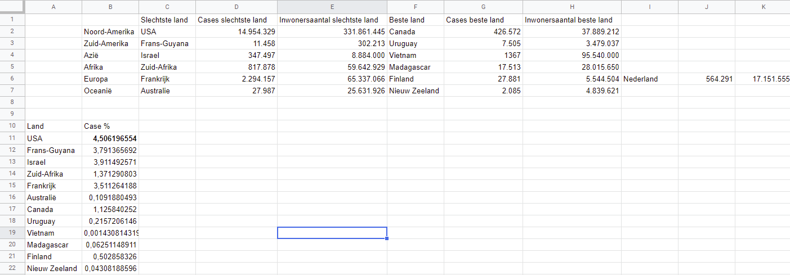
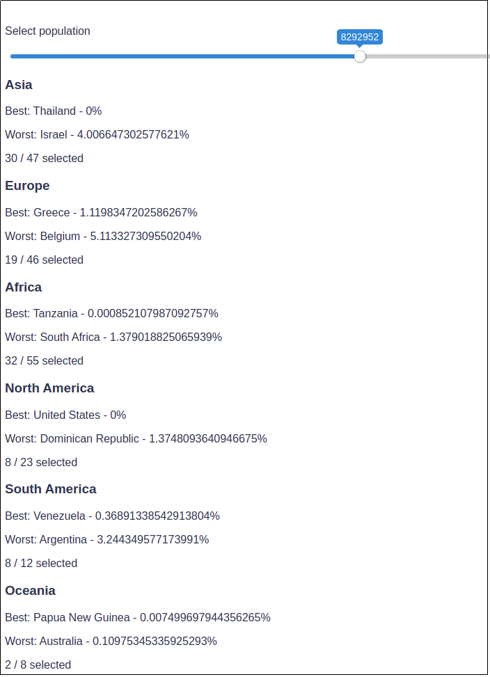

Lockdown air pollution
In the beginning of Covid-19 pandemic, every country in the world took strong measures to contain the virus. Because car- and air-traffic were reduced by a lot the air was a lot cleaner as a result. Because of these measures, the KNMI wanted to develop a interactive and insightful tool for politicians and other people, so people can understand how collective behaviour can greatly reduce air pollution. The reduction in air pollution is easy to measure with the Dutch TROPOMI satellite, that the KNMI is supervising. The satellite has been measuring the world on air pollution since 2018 from space. From a provisional analysis of the lockdown, the cities in South-Europe and Paris were 60% cleaner compared to the years before the pandemic. Of course, not every city had the same effect, because not every place had the same measurements.

How do we design a data visualisation for policy makers and the general public?
Our initial idea is to collect data regarding Covid-19 infections and measurements during a certain time frame. After getting enough data and information, we started brainstorming and sketching different ideas. The table to the right is a collection of all the data we have collected. The developer made a small slider for us to decide the country's we would measure against each other.

